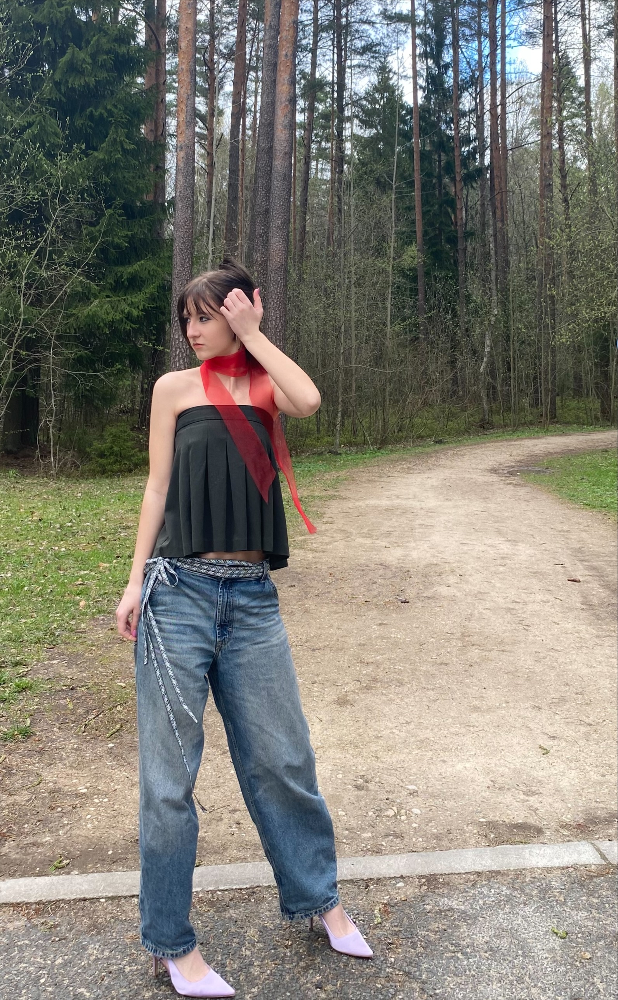
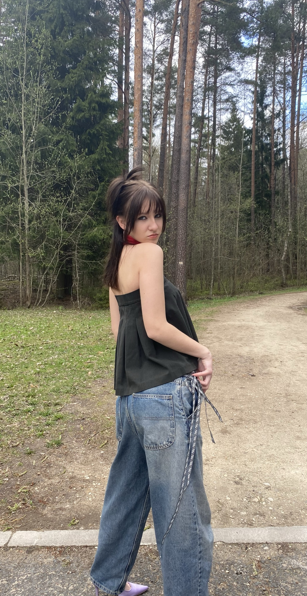
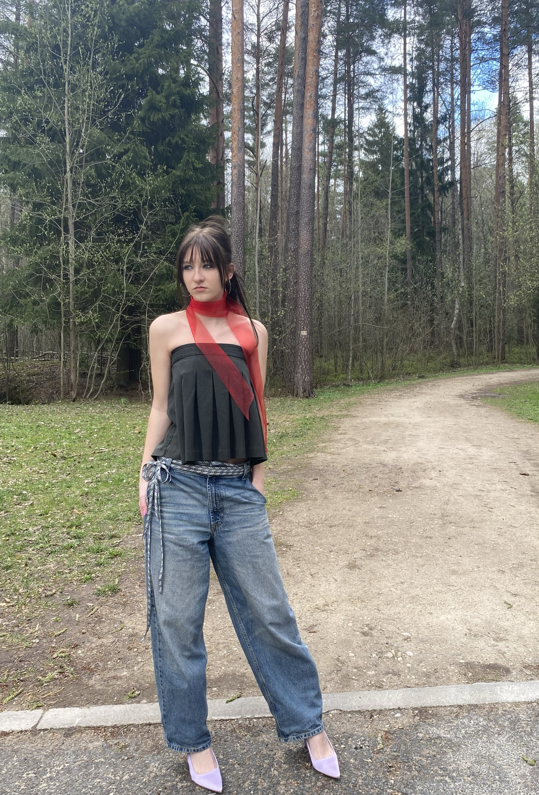

Līva Terēze Tiliba
Par dizaineri
Sveiki! Mani sauc Līva Terēze Tiliba, es esmu dizainere un es mācos radošo industriju virzienā.
Par tērpu
Tērps ir izveidots divtūkstošo stilā. Es izvēlējos platas džinsu bikses, jo tās bija populāras tajā laika posmā. Krekla vietā ir svārki. Svārki kopā ar biksēm parāda vienlīdzību, jo drēbēm nav dzimuma un tās var vilkt jebkurš. Ap kaklu ir šallīte kura ir sarkanā krāsā, simbolizējot Latvijas karogu. Jostai, ir latvju raksti, lai izjustu patriotisma noskaņu. Kājās ir augstpapēžu kurpes, kas parāda latviešu eleganto pusi.
Moodboards

Tērps



@lttiliba